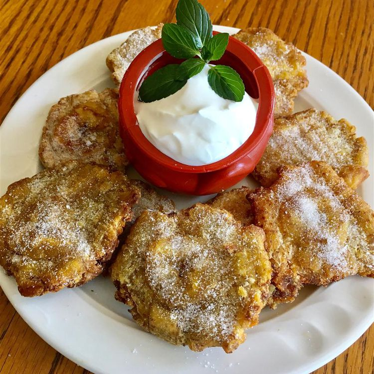

Home
Patacones

Description
Patacón, tostón, tachino, or frito is a dish made from flattened, fried pieces of green plantain, traditional in the cuisines of several Latin American countries, primarily in the Caribbean region, such as Colombia, Costa Rica, Cuba, Ecuador, Haiti, Honduras, Nicaragua, Panama, Puerto Rico, the Dominican Republic, and Venezuela. The word “patacón” comes from its resemblance to the colonial coin of the same name.
Ingredients
- ½ cup oil for frying
- 1 ripe plantain, peeled and cut into 1-inch rounds
- 1 pinch salt
Steps
- Place a plate upside-down onto a work surface.
- Heat oil in a large skillet over medium heat. Lower plantain slices carefully into the hot oil. Fry until slightly browned, 2 to 3 minutes per side. Transfer to the upside-down plate, using a slotted spoon, reserving oil in the skillet. Place a second plate, right-side up, onto plantains. Smash plantain slices by gently pressing top plate into bottom plate.
- Lower smashed plantains carefully into the hot oil. Fry until browned, 2 to 3 minutes per side. Transfer to a paper towel-lined plate to drain; sprinkle with salt.
- Spread 3/4 cup of sauce in a 9x13-inch baking dish. Cover with 3 uncooked lasagna noodles, 1 3/4 cups of cheese mixture, and 1/4 cup sauce; repeat layers once more. Top with remaining 3 noodles, sauce, mozzarella, and Parmesan cheese. Pour 1/2 cup water along the edges of the dish. Cover tightly with aluminum foil.